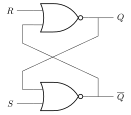
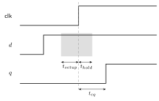

A sequential circuit’s outputs depend on the current inputs and on stored state, a summary of the input history (a TV tuner must remember the current channel to act on “channel up”). Structurally it is combinational logic plus memory elements in a feedback loop: state feeds the logic, the logic computes the next state.
Two disciplines exist:
Race conditions and hazard sensitivity make asynchronous design hard, so virtually all practical design is synchronous, with asynchronous techniques reserved for interfaces between clock domains. The rest of this note is the synchronous toolkit. Latches and flip-flops themselves are small asynchronous circuits, designed once, characterized carefully, and reused as black boxes.
A bistable holds one bit using feedback. Cross-coupling two NOR gates gives an SR latch: sets , resets , both low holds, both high is illegal ( and both driven low, and releasing and together races).

| 0 | 0 | hold | |
| 0 | 1 | 0 | reset |
| 1 | 0 | 1 | set |
| 1 | 1 | – | illegal |
Its characteristic equation (next state as a function of inputs and present state, assuming ): . Gating and with an enable gives the clocked SR latch, active only while the enable is high.
A D latch removes the illegal state by deriving
,
behind the enable, so
.
It is level-sensitive: while EN is high it is transparent
(
follows
);
while low it holds. Transparency makes latches hard to time, so
synchronous RTL avoids inferring them.
A D flip-flop is edge-triggered: it samples only on the rising clock edge and holds for the rest of the cycle. The classic construction is master-slave: two D latches on opposite clock phases. While the clock is low the master is transparent and the slave holds; on the rising edge the master closes, freezing the value the slave then presents. No moment exists when input can flow straight through, which is what edge triggering means. The triangle on the clock pin marks edge sensitivity. It is the standard state element.
Variants derive from it, each defined by its characteristic equation:
| Type | Characteristic | Behavior |
|---|---|---|
| D | load every edge | |
| T | toggle when | |
| JK | set on , reset on , toggle on both |
Read in reverse, the excitation table gives the inputs forcing a desired transition, the classical recipe for designing FSM next-state logic with T or JK flops (a D flop’s excitation is trivially , one reason it won). In modern synchronous design everything is a D flop; T and JK survive as exercises and inside counters.
Each flip-flop imposes timing constraints around the edge:

For a path between two flip-flops through logic of delay , the clock period satisfies , setting the maximum frequency. A hold violation () is a fast-path failure and cannot be fixed by slowing the clock.
Model edge-triggered state with always_ff and the
nonblocking assignment (<=). Combinational blocks use
blocking =; sequential blocks use <=.
Mixing them is the main source of simulation versus synthesis
mismatch.
always_ff @(posedge clk)
if (rst) q <= '0; // synchronous reset
else if (en) q <= d; // load only when enabledA register is flip-flops on a shared clock storing an -bit word, usually with an enable (conditional load) and a reset (force to a known value). A slash with a number marks a bus width.
Connecting each flip-flop’s output to the next input shifts the word one position per clock. Used for serial-to-parallel conversion, delays, and LFSR sequence generators.
always_ff @(posedge clk) q <= {q[2:0], in}; // shift left, in at LSBFeeding a register through an incrementer makes a binary counter. Variants add load, enable, up/down direction, and a terminal-count output. Common shapes:
An LFSR (linear feedback shift register) counts through a pseudo-random sequence: shift, with the input the XOR of taps given by a generator polynomial over . A maximal polynomial such as cycles through all nonzero states:
always_ff @(posedge clk) lfsr <= {lfsr[2:0], lfsr[3] ^ lfsr[2]};The next-state logic is one XOR regardless of width, so LFSRs make the cheapest “counters” when the count order is irrelevant, and the same structure computes CRCs.
A register file is a small multi-port array: combinational (asynchronous) read ports and a clocked write port. It backs a CPU’s architectural registers.
logic [31:0] rf [0:31];
assign rd1 = rf[ra1];
always_ff @(posedge clk) if (we) rf[wa] <= wd;Larger storage uses RAM, typically a single port with a registered read so it maps to a dense block-RAM primitive.
logic [W-1:0] mem [0:DEPTH-1];
always_ff @(posedge clk) begin
if (we) mem[addr] <= din;
dout <= mem[addr]; // registered read
endA FIFO buffers data between producer and consumer using a circular
buffer with write and read pointers. full and
empty flags come from comparing the pointers; a wrap bit
distinguishes the two equal-pointer cases. A dual-clock FIFO with
Gray-coded pointers safely crosses clock domains.
An arbiter grants a shared resource to one of several requesters, one grant per cycle. A fixed-priority arbiter always favors the lowest index (a priority encoder over the request vector). A round-robin arbiter rotates priority after each grant for fairness.
Inserting registers to split a long combinational path into stages raises throughput to one result per clock at the cost of latency. The slowest stage sets the period, so balancing stage delays maximizes frequency.
An FSM is sequential logic with named states. It has combinational next-state logic, a state register, and combinational output logic.
The design procedure:
case and let synthesis
minimize).The example below is a Mealy “101” sequence detector; the
1/det arc asserts the output the cycle the pattern
completes.
Code it in the three-block style: one always_ff for the
state register, one always_comb for next state, one for
outputs.
typedef enum logic [1:0] { S0, S1, S2 } state_t;
state_t state, next;
always_ff @(posedge clk)
state <= rst ? S0 : next;
always_comb begin
next = state;
unique case (state)
S0: if (in) next = S1;
S1: next = in ? S1 : S2;
S2: next = in ? S1 : S0;
endcase
end
assign det = (state == S2) && in; // Mealy outputA Moore version of the same detector needs a fourth state, “just saw
101”, whose mere occupancy asserts det, and its output
arrives one cycle later since the pattern must first be registered into
that state. That is the general trade: Mealy reacts in the same cycle
with fewer states; Moore is a clean registered output, one cycle
behind.
State encoding trades area against speed: binary uses
flip-flops; one-hot uses
flip-flops with simple, fast next-state logic (favored on FPGAs); Gray
encoding changes one bit per step to cut switching and crossing hazards.
Codes left unused are unreachable in theory but reachable after an
upset, so safe designs give unique case a
default routing unknown states back to reset.
MIT License
Copyright (c) 2025 Sai Govardhan (saigov14@gmail.com)
Permission is hereby granted, free of charge, to any person obtaining a copy
of this software and associated documentation files (the "Software"), to deal
in the Software without restriction, including without limitation the rights
to use, copy, modify, merge, publish, distribute, sublicense, and/or sell
copies of the Software, and to permit persons to whom the Software is
furnished to do so, subject to the following conditions:
The above copyright notice and this permission notice shall be included in all
copies or substantial portions of the Software.
THE SOFTWARE IS PROVIDED "AS IS", WITHOUT WARRANTY OF ANY KIND, EXPRESS OR
IMPLIED, INCLUDING BUT NOT LIMITED TO THE WARRANTIES OF MERCHANTABILITY,
FITNESS FOR A PARTICULAR PURPOSE AND NONINFRINGEMENT. IN NO EVENT SHALL THE
AUTHORS OR COPYRIGHT HOLDERS BE LIABLE FOR ANY CLAIM, DAMAGES OR OTHER
LIABILITY, WHETHER IN AN ACTION OF CONTRACT, TORT OR OTHERWISE, ARISING FROM,
OUT OF OR IN CONNECTION WITH THE SOFTWARE OR THE USE OR OTHER DEALINGS IN THE
SOFTWARE.